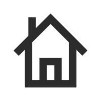
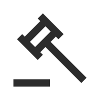

        </br>
        <li>
            <a href="about.html">
                <i class="linecons-doc"></i>
                <span class="title">关于本站</span>
            </a>
        </li>
        </ul>
        </div>
        </div>
        <div class="main-content">
        <nav class="navbar user-info-navbar" role="navigation">
        <!-- User Info, Notifications and Menu Bar -->
        <!-- Left links for user info navbar -->
        <ul class="user-info-menu left-links list-inline list-unstyled">
        <li class="hidden-sm hidden-xs">
            <a href="../index.html#" data-toggle="sidebar">
                <i class="fa-bars"></i>
            </a>
        </li>
        <li class="dropdown hover-line language-switcher">
            <a href="../index.html" class="dropdown-toggle" data-toggle="dropdown">
                 导航
            </a>
            <ul class="dropdown-menu languages">
                <li class="active">
                    <a href="../index.html">
                         导航
                    </a>
                </li>
                <li>
                    <a href="./tool.html">
                         利器
                    </a>
                </li>
            </ul>
        </li>
        </ul>
        </nav>
        <div class="main-content" style="">
        <div class="row">
        <div class="col-md-12">
            <div class="panel panel-default">
                <!-- 关于网站 -->
                <h4 class="text-gray" style="font-weight:bold;">About This Website</h4>
                <div class="panel-body">
                    <div class="row">
                        <div class="col-sm-12">
                            <blockquote>
                                <p style="font-weight:normal;">项目托管在<span class="icon iconfont">&#xe6a4;</span><a href="https://github.com/rhinoc/Index">rhinoc/Index</a>，欢迎PR。</p>
                                <p style="font-weight:normal;">Fork自<span class="icon iconfont">&#xe667;</span><a href="http://www.viggoz.com">Viggo</a>的<span class="icon iconfont">&#xe6a4;</span><a href="https://github.com/WebStackPage/WebStackPage.github.io">WebStack</a>。</p>
                                <p style="font-weight:normal;">因为一直找不到好看的主页，所以这些年主页都是<span class="icon iconfont">&#xe667;</span><a href="about:blank" target="_blank">about:blank</a>，某天看到创造狮的网站导航，觉得还不赖，就在Github上找了一个界面差不多的模版Fork了。</p>
                                <p style="font-weight:normal;">显然，这是一个开源项目，主要放一些自己经常用到的网站，如果你无聊到想认识我，可以扫描下方二维码向我汇款。</p>
                            </blockquote>
                        </div>
                    </div>
                    <!-- 关于站长 -->
                    <h4 class="text-gray" style="font-weight:bold;">About Me</h4>
                    <div class="row">
                        <div class="col-sm-4">
                            <div class="xe-widget xe-conversations box2 label-info" onclick="window.open('http://www.rhinoc.top/', '_blank')" data-toggle="tooltip" data-placement="bottom" title="" data-original-title="http://www.rhinoc.top/">
                                <div class="xe-comment-entry">
                                    <a class="xe-user-img">
                                        
                                    </a>
                                    <div class="xe-comment">
                                        <a href="../index.html#" class="xe-user-name overflowClip_1">
                                            <strong>rhinoc</strong>
                                        </a>
                                        <p class="overflowClip_2"> Troublemaker & Moneylover </p>
                                    </div>
                                </div>
                            </div>
                        </div>
                    </div>
                    </br>
                    <h4 class="text-gray" style="font-weight:bold;">Support Me</h4>
                    <span class="label2 label2-info" data-toggle="tooltip" data-placement="bottom" data-original-title="Through WeChat">
                        </span>
                    <span class="label2 label2-info" data-toggle="tooltip" data-placement="bottom" data-original-title="Through Alipay">
                        </span>
                    <!-- <h4 class="text-gray">反馈交流</h4>
                    <div>
                        
                    </div> -->
                </div>
            </div>
        </div>
        </div>
        <!-- Main Footer -->
        <!-- Choose between footer styles: "footer-type-1" or "footer-type-2" -->
        <!-- Add class "sticky" to  always stick the footer to the end of page (if page contents is small) -->
        <!-- Or class "fixed" to  always fix the footer to the end of page -->
        <footer class="main-footer sticky footer-type-1">
        <div class="footer-inner">
            <!-- Add your copyright text here -->
            <div class="footer-text">
                &copy; 2018 - ∞
                <a href="../about.html"><strong>造作家</strong></a> design by <a href="http://rhinoc.top" target="_blank"><strong>rhinoc</strong></a>
                <!--  - Purchase for only <strong>23$</strong> -->
            </div>
            <!-- Go to Top Link, just add rel="go-top" to any link to add this functionality -->
            <div class="go-up">
                <a href="../index.html#" rel="go-top">
                    <i class="fa-angle-up"></i>
                </a>
            </div>
        </div>
        </footer>

        </div>
        </div>
        <!-- 锚点平滑移动 -->
        <script type="text/javascript">
        // $(document).ready(function() {
        //     $("#main-menu li ul li").click(function() {
        //         $(this).siblings('li').removeClass('active'); // 删除其他兄弟元素的样式
        //         $(this).addClass('active'); // 添加当前元素的样式
        //     });
        //     $("a.smooth").click(function() {
        //         $("html, body").animate({
        //             scrollTop: $($(this).attr("href")).offset().top - 30
        //         }, {
        //             duration: 500,
        //             easing: "swing"
        //         });
        //     });
        //        return false;
        // });
        var href = "";
        var pos = 0;
        $("a.smooth").click(function(e) {
        $("#main-menu li").each(function() {
        $(this).removeClass("active");
        });
        $(this).parent("li").addClass("active");
        e.preventDefault();
        href = $(this).attr("href");
        pos = $(href).position().top - 30;
        $("html,body").animate({
        scrollTop: pos
        }, 500);
        });
        </script>
        <!-- Bottom Scripts -->
        <script src="../assets/js/bootstrap.min.js"></script>
        <script src="../assets/js/TweenMax.min.js"></script>
        <script src="../assets/js/resizeable.js"></script>
        <script src="../assets/js/joinable.js"></script>
        <script src="../assets/js/xenon-api.js"></script>
        <script src="../assets/js/xenon-toggles.js"></script>
        <!-- JavaScripts initializations and stuff -->
        <script src="../assets/js/xenon-custom.js"></script>
</body>

</html>

<!-- https://github.com/rhinoc/Index -->
<!-- Generated by generator.py -->
